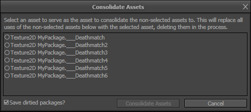
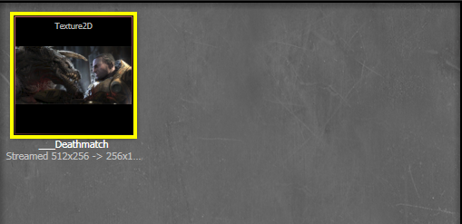

UDN
Search public documentation:
AssetConsolidationToolKR
English Translation
日本語訳
中国翻译
Interested in the Unreal Engine?
Visit the Unreal Technology site.
Looking for jobs and company info?
Check out the Epic games site.
Questions about support via UDN?
Contact the UDN Staff
日本語訳
中国翻译
Interested in the Unreal Engine?
Visit the Unreal Technology site.
Looking for jobs and company info?
Check out the Epic games site.
Questions about support via UDN?
Contact the UDN Staff
UE3 홈 > 언리얼 에디터와 툴 > 애셋 통합 툴
애셋 통합 툴
문서 변경내역: Billy Bramer 작성; 홍성진 번역.
개요
애셋 통합 툴 사용하기
애셋 통합 툴 불러오기
툴에 접근하려면 콘텐츠 브라우저에서 통합 과정에 사용할 애셋을 최소 하나 선택하기만 하면 됩니다. 그리고 오른클릭 후 뜨는 맥락 메뉴에서 "통합..." 을 선택합니다. 통합 대화창에 툴을 띄우기 전에 선택된 애셋 전부가 채워진 상태로 뜨게 됩니다. 애셋을 더 추가하려면 그냥 콘텐츠 브라우저에서 끌어다가 대화창의 주요 부분에다 떨구기만 하면 됩니다. 통합에서 주의할 점은 선택된 오브젝트 중 동일한 유형으로만 제한되며, 텍스처와 머티리얼에는 약간의 예외가 허용됩니다. "통합..." 옵션이 보이지 않거나 드래그-드롭이 작동하지 않는 경우, 동일한 유형의 애셋을 선택했는 지를 확인해 보셔야 합니다! 실수로 잘못된 애셋을 추가한 경우, 대화창에서 선택하고 delete 키를 누르면 삭제할 수 있습니다.  |
| 요 텍스처가 여러번 중복됐습니다! 전부 선택하고서 오른클릭을 하면 '통합...' 옵션이 뜹니다. |
애셋 통합하기
통합 과정에서 사용할 애셋 전부를 대화창에 채웠으면, "통합 대상 애셋"을 하나 선택하고, "애셋 통합" 을 누릅니다. 나열된 것 중 선택되지 않은 애셋으로의 참조는 전부 선택된 애셋으로의 참조로 대체되며, 선택되지 않은 애셋은 삭제합니다. 대화창에 애셋이 최소 둘 있고, 하나를 선택한 상태가 아니면 "애셋 통합" 버튼은 켜지지 않음에 유의하십시오.|  |
| 통합 대화창 안에서 애셋을 선택하면 '통합 대상 애셋'으로 마킹하는 겁니다. |
|  |
| 중복된 것 전부가 선택된 애셋으로 통합됐습니다! |
애셋 통합 툴 작동법
우수 사례
- 애셋 통합 툴이 하는 일의 속성으로 보면, 제대로 사용하지 않을 경우 굉장히 위험할 수가 있습니다. 툴 사용자는 항상 뭘 하려 하는지 생각해야 하며, 작업 결과가 애셋의 맥락에 잘 들어맞는지 결정해야 합니다. 명백히 잘못된 통합은 툴이 자체적으로 막아주긴 하지만, 패키지를 망치지 않도록 항시 주의해야 하는 건 사용자의 몫입니다. 통합된 애셋을 삭제하고 기존 사용처를 선택된 오브젝트로 돌려주는 기능을 하는 툴이라는 점을 명심하십시오. "액터를 대체하는" 형태의 작업 대체법이 아닙니다!
- 애셋 통합 툴은 오브젝트 리디렉터 를 많이 사용합니다. 즉 애셋 통합 툴을 사용한 뒤 약간 지나고서 종종 FixupRedirects 커맨드릿 을 사용해 주시는 게 좋다는 뜻입니다.
- 애셋 통합 툴이 현재 로드되어 메모리에 있는 패키지/맵 내 통합할 오브젝트로의 참조를 강제로 대체하려 하기는 하지만, 툴을 사용할 때 통합할 오브젝트로의 참조를 가급적 줄여 통합 성공률을 높이는 게 좋습니다. 구체적으로, 곧 통합될 애셋을 (애님셋 에디터와 같은) 하위-에디터로 열어 활용하는 것은 매우 문제의 소지가 큽니다.
제한사항 및 경고
- 패키지가 실수로 망가지는 것을 방지하기 위해 애셋 통합 툴은 동일한 클래스/유형의 애셋으로만 불러올 수 있으나, 한 가지 예외는 모든 오브젝트가 머티리얼 또는 텍스처 유형일 때입니다. (즉 머티리얼과 데칼 머티리얼은 엄밀히 같은 유형은 아니라도 통합될 수는 있습니다.) 이는 머티리얼을 스태틱 메시로 통합하는 것과 같이 확실히 크래시 및/또는 패키지 파괴를 유발하는 통합을 방지하기 위함입니다. 교차-유형 통합이 허용된 경우에도, 복수 유형을 통합하려 한다는 경고를 툴이 띄우게 됩니다.
- 애셋 통합 툴이 사용자가 선택한 애셋을 항상 통합할 수 있는 건 아닙니다. 사용자가 통합할 애셋 중 하나로의 참조를 포함하는 애셋을 "통합 대상 애셋"으로 선택한 경우, 해당 애셋은 통합되지 않게 됩니다. 그런 작업을 허용하게 되면 "통합 대상 애셋"을 자신에게 참조하도록 만들게 되며, 분명 문제가 생기게 될겁니다. 부가적으로 루트 패키지도 통합이 불가능합니다. 애초에 선택 가능하지도 않게 해 놓긴 했습니다. 통합에 생략된 애셋이 있는 경우 통합 작업 끝에 경고창이 뜨게 됩니다.
- 애셋 통합 툴은 문제없는 애셋인 경우에도 가끔, 어떤 이유로 인해 그 참조를 비울 수 없거나 그 자체를 지울 수 없는 경우에 통합에 실패하게 됩니다. 이런 실패 유형은 치명적인데, 일부는 통합되고 일부는 그대로인 "부분 통합" 상태가 되기 때문입니다. 이런 실패 유형은 꽤 드물지만, 만약 발생하는 경우 영향받은 애셋과 영향받을 수도 있는 패키지를 표시하는 경고창이 뜨게 됩니다. 영향받은 애셋/패키지를 저장해서는 안되며, 저장해버리면 부분 통합의 재앙이 덮치게 됩니다.
- 우수 사례 에서 언급했듯이, 잠재적으로 영향받을 애셋을 애님셋 에디터같은 다양한 하위에디터에서 연 상태로 애셋 통합 툴을 활용하는 것은 문제의 소지가 매우 큽니다. 궁극적으로 대부분의 하위에디터를 띄워두고 참조를 바꿔버리면 제대로 반응하지 않게 되니, 통합 도중에 하위에디터를 사용하면 사용불가능한 상태가 되거나 잠재적 크래시 위험이 있습니다.
- 현재로써는 통합 작업이 성공하면, 통합된 오브젝트 중 하나로의 참조를 포함하는 로드안된 패키지를 메모리에 로드 시도하기 전에 관련된 패키지를 저장하는 것이 좋습니다. 현재 미해결 콘텐츠 브라우저/오브젝트 리디렉터 버그로 인해, 참조 패키지를 저장하기 전에 로드해 버리면 통합된 애셋이 브라우저에 다시 나타나지 않는 버그가 생길 수 있습니다.
- 애셋 통합 툴은 작업 시점에서 이미 로드된 패키지에 있는 통합 오브젝트로의 참조만 대체합니다. 로드안된 패키지에 남아있는 참조를 고치는 데는 오브젝트 리디렉터 에 의존합니다. 즉 딱히 필요하지 않은 경우엔 리디렉터를 무시하거나 덮어쓰거나 삭제하는 등의 조치를 취하지 않는 것이 좋다는 뜻입니다. 그렇지 않으면 패키지 일부는 제대로 고쳐지고, 일부는 아니게 됩니다. 전에 대충 말씀드렸듯이, FixupRedirects 커맨드릿 을 활용하여 이 문제를 경감시킬 수 있습니다.